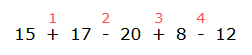
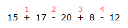
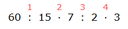
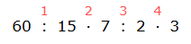
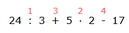
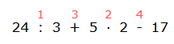

Действия первой и второй ступени. Порядок действий.
Арифметические действия делятся на действия первой и второй ступени.
Действия первой ступени — это сложение и вычитание:
5 + 4— сложение,7 - 3— вычитание.
Действия второй ступени — это умножение и деление:
5 · 4— умножение,12 : 3— деление.
Порядок действий
Если выражение содержит действия только одной ступени и в нём нет скобок, то действия выполняются в порядке их следования слева направо.
Пример 1. Вычислить значение выражения:
Решение: Данное выражение содержит действия только одной ступени — первой (сложение и вычитание). Надо определить порядок действий и выполнить их.

15 + 17 - 20 + 8 - 12.Решение: Данное выражение содержит действия только одной ступени — первой (сложение и вычитание). Надо определить порядок действий и выполнить их.

- 15 + 17 = 32;
- 32 - 20 = 12;
- 12 + 8 = 20;
- 20 - 12 = 8.
Пример 2. Вычислить значение выражения:
Решение: Данное выражение содержит действия только одной ступени — второй (умножение и деление). Надо определить порядок действий и выполнить их.

60 : 15 · 7 : 2 · 3.Решение: Данное выражение содержит действия только одной ступени — второй (умножение и деление). Надо определить порядок действий и выполнить их.

- 60 : 15 = 4;
- 4 · 7 = 28;
- 28 : 2 = 14;
- 14 · 3 = 42.
Если выражение содержит действия обеих ступеней, то первыми выполняются действия второй ступени, в порядке их следования (слева направо), а затем действия первой ступени.
Пример 3. Вычислить значение выражения:
Решение: Данное выражение содержит четыре действия: два первой ступени и два второй. Определим порядок их выполнения: согласно правилу первым действием будет деление, вторым — умножение, третьим — сложение, а четвёртым — вычитание.

24 : 3 + 5 · 2 - 17.Решение: Данное выражение содержит четыре действия: два первой ступени и два второй. Определим порядок их выполнения: согласно правилу первым действием будет деление, вторым — умножение, третьим — сложение, а четвёртым — вычитание.

Теперь приступим к вычислению:
- 24 : 3 = 8;
- 5 · 2 = 10;
- 8 + 10 = 18;
- 18 - 17 = 1.